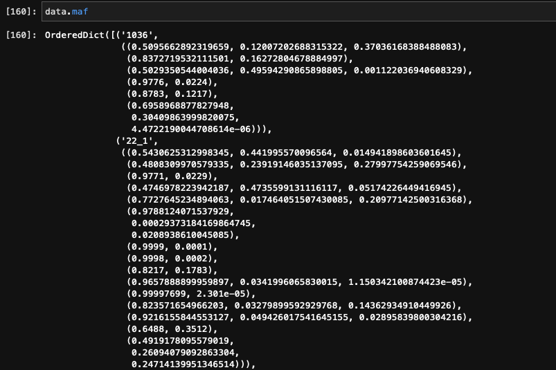

Weekly Discussion
05/04/2022
- Calculate LOD score under a range of afreq
- runPM on top HLOD variants
04/27/2022
- format vcf to runPM input (chr22; afreq cutoff 0.01) (https://github.com/changebio/alzheimers-family/blob/master/notebook/20220426_Format_vcf_to_runPM_input.ipynb)
- calculate LODs for different population by plug in allele freq from annotation file (AF, not population AF) (https://github.com/changebio/alzheimers-family/blob/master/notebook/20220426_Result_summary_R.ipynb)
- compare AF between annotation and vcf
- compare the result between paramlink2 and mlink (https://github.com/changebio/SEQLinkage/blob/master/nbs/paramlink2vsmlink.ipynb)
=== - The manhattan plots of different population with afreq=0.5 - The informative families and allele freq in HLOD result - The founder percentage in different population - How paramlink2 break loops? - Read rvnpl papers
04/20/2022
- genome wide linkage analysis
- format genotype data
- plug in allele freq from annotation file
- calculate LODs for different population
04/13/2022
- Format CHP output for runPM
- Test runPM
- linkage heterogeneity
- The number of significant variants increases.
- linkage analysis without haplotype imputation
04/06/2022
- Format CHP output for runPM
- Test runPM
- Maximize the likelihood using grid search method
- Run linakge analysis of common variants on all chromosomes
03/30/2022
- Maximize the likelihood using grid search method
- Run linakge analysis of common variants on all chromosomes
- Check recombination on gene TPTEP1
Some thoughts to reduce recombination 1. filter common variants before phasing 2. filter variants only occurred once in a family (singleton) before phasing 3. remove families with recombination more than 3
- TPTEP1
- 989 family: 31 -> 19 -> 3
- <3 recombination 0.49 -> 0.82
Q: recombination and CHP markers (pseudomarker calculates the likelihood of a marker from all the data joinly)
- using recombination pattern accross all families 03/23/2022
- Build seqlink and paramlink2 sos pipeline for linkage analysis
- Run linakge analysis on all chromosomes
- the results are promising (maybe still need to control type I errors)
- most of the significant variants (LOD>3) are rare variants.
- Using pseudomarker to do further analysis for variants with lod>3?(twostage.py)
- Verify results by previous studies (A list of genes or variants?)
- Create pseudomarker input and test pseudomarker
- cannot handle mendelian errors in CHP markers (https://github.com/gaow/SEQLinkage/issues/41) The reason is that recombination is setted as False to generate CHP markers.
- about 5 min per variant
Q:
recombination and CHP markers (pseudomarker calculates the likelihood of a marker from all the data joinly)
03/16/2022
- Update multiprocessing to output the intermediate data
- qsub task killed (too many jobs or not enough memory?)
- Build rpy2 pipeline for linkage analysis
- Run linakge analysis on chromosomes
- Remove unused parameters and codes in cstatgen.
=== - Fimpute https://animalbiosciences.uoguelph.ca/~msargol/fimpute/
Questions: - Using sos to run seqlink - jobs - for_each - memory for each job or total
- log odds pvalue distribution
03/09/2022
run linkage analysis by paramlink2 on chr19 (APOE genes)
comparing lods under different dfreq and other model parameters (merlin model parameter AD 0.001 0.01,0.90,0.90 Dominant_Model)
generate a pipeline to analysis multiple genes
===
plink vs plink2
common variants
03/03/2022
merlin model parameter AD 0.001 0.01,0.90,0.90 Dominant_Model - 1.Is it reasonable to use marker freq as the population frequency of the disease allele? - 2.How to integrate lods from different markers and in different families in the same gene? - 3.What is the cutoff of lod? Do we need to do adjust the threshold?
Why VCF QC is necessary? The variant number is kind of the same as Yu’s vcf.(need to do DP and GQ filtering) /mnt/mfs/statgen/alzheimers-family/normalized_bed The variants are too dense to use lander-green algorithm.
The vcf file I used only has GT information in it.
How the vcf I used is matched with Yu’s vcf?
02/24/2022
Progress
SEQLinkage
update multiple processing to speed up write linkage files 360 genes and 500 families using 10 hours to write as linkage (I/O bound problem)
Take a look at Pseudomarker - https://www.jurgott.org/linkage/runPM.html - https://www.mv.helsinki.fi/home/tsjuntun/pseudomarker/download.html - https://www.ncbi.nlm.nih.gov/CBBresearch/Schaffer/fastlink.html
Only input and output file without run-linkage
VCF_QC
Double check on the MAF being truly MAF
Run VCF_QC under DP=2,
sos run ./pipeline/VCF_QC.ipynb qc \
--genoFile /home/yh3455/xqtl-pipeline/ADSP_WES_geno_list.txt \
--dbsnp-variants /mnt/mfs/statgen/snuc_pseudo_bulk/data/reference_data/00-All.add_chr.variants.gz \
--reference-genome /mnt/mfs/statgen/snuc_pseudo_bulk/data/reference_data/GRCh38_full_analysis_set_plus_decoy_hla.noALT_noHLA_noDecoy_ERCC.fasta \
--DP-snp 2 --DP-indel 2 \
--cwd /home/yh3455/Github/linkage/SEQpy3/data/genotype_all_dp2 --container /home/yh3455/Github/xqtl-pipeline/container/sifs/bioinfo.sif -J 22 --numThreads 10 --mem 128Check VCF QC http://mbontrager.org/blog/2016/08/17/Variant-Exploration
test on chr9 and chr22
sos run ./pipeline/VCF_QC.ipynb qc --genoFile /home/yh3455/Github/xqtl-pipeline/ADSP_WES_geno_list1.txt --dbsnp-variants /mnt/mfs/statgen/snuc_pseudo_bulk/data/reference_data/00-All.add_chr.variants.gz --reference-genome /mnt/mfs/statgen/snuc_pseudo_bulk/data/reference_data/GRCh38_full_analysis_set_plus_decoy_hla.noALT_noHLA_noDecoy_ERCC.fasta --DP-snp 2 --DP-indel 2 --cwd /home/yh3455/Github/linkage/SEQpy3/data/genotype_all_dp2_test --container /home/yh3455/Github/xqtl-pipeline/container/sifs/bioinfo.sif -J 22 --numThreads 10 --mem 128removing bcftools filter -i 'GT="hom" | TYPE="snp" & GT="het" & (FORMAT/AD[*:1])/(FORMAT/AD[*:0] + FORMAT/AD[*:1]) >= ${AB_snp} | TYPE="indel" & GT="het" & (FORMAT/AD[*:1])/(FORMAT/AD[*:0] + FORMAT/AD[*:1]) >= ${AB_indel}' * 174325 gcad.qc.r2.wes.chr9.20504.GATK.2020.06.26.biallelic.genotypes.ALL.leftnorm.filtered.vcf.gz
removing bcftools filter -i 'GT="hom" | TYPE="snp" & GT="het" & (FORMAT/AD[*:1])/(FORMAT/AD[*:0] + FORMAT/AD[*:1]) >= ${AB_snp} | TYPE="indel" & GT="het" & (FORMAT/AD[*:1])/(FORMAT/AD[*:0] + FORMAT/AD[*:1]) >= ${AB_indel}' | \ bcftools filter -i 'F_MISSING<${geno_filter} & HWE>${hwe_filter}' * 277375 gcad.qc.r2.wes.chr9.20504.GATK.2020.06.26.biallelic.genotypes.ALL.leftnorm.filtered.vcf.gz #### Questions and Issues 1. What is the difference between merlin and mlink?
02/17/2022
1. The format of daily PR
- https://changebio.github.io/researchsummary/
2. SEQLinkage
Progress
- Implement get AF from annotation.
- Fix maf bug by reverse genotype if maf > 0.5. A potential problem with calculating marker frequencies.
- Fix output format and path bugs.
- Update the command line script.
- Running likange analysis on chr22
=== - Yu’s data. VCF_QC has been done. Telled her the path of the data * 170839 gcad.qc.r2.wes.chr9.20504.GATK.2020.06.26.biallelic.genotypes.ALL.leftnorm.filtered.bim * 174326 gcad.qc.r2.wes.chr9.20504.GATK.2020.06.26.biallelic.genotypes.ALL.leftnorm.filtered.vcf.gz * 368336 gcad.qc.r2.wes.chr9.20504.GATK.2020.06.26.biallelic.genotypes.ALL.leftnorm.vcf.gz * 368318 gcad.qc.r2.wes.chr9.20504.GATK.2020.06.26.biallelic.genotypes.ALL.vcf.gz
sos run ./pipeline/VCF_QC.ipynb qc \
--genoFile /home/yh3455/xqtl-pipeline/ADSP_WES_geno_list \
--dbsnp-variants /mnt/mfs/statgen/snuc_pseudo_bulk/data/reference_data/00-All.add_chr.variants.gz \
--reference-genome /mnt/mfs/statgen/snuc_pseudo_bulk/data/reference_data/GRCh38_full_analysis_set_plus_decoy_hla.noALT_noHLA_noDecoy_ERCC.fasta \
--cwd /home/yh3455/Github/linkage/SEQpy3/data/genotype_all --container /home/yh3455/Github/xqtl-pipeline/container/sifs/bioinfo.sif -J 22 --numThreads 10 --mem 128Questions and Issues
1.the vcf file and the annotation file don’t match. Can we get the variant id by VCFstream? > add a get variant id function in cstatgen > https://github.com/statgenetics/cstatgen/blob/d51a06c18cd340fafe31e9b915ef9a2e49b55987/src/umich/vcf/VcfRecord.h
2.missing freq or 0 freq are assigned a MAF of (1-k)/2n. k is the fraction of singletons observed (need clarify). https://www.sciencedirect.com/science/article/pii/S0002929719303453 > add a new argument to deal with missing or 0 freq. default is to remove them. user can set an assigned MAF.
3.Do we need to do VCF QC for the family data? > * == further discussion is needed == *
